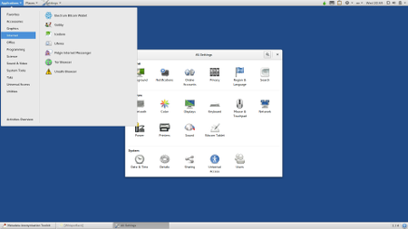
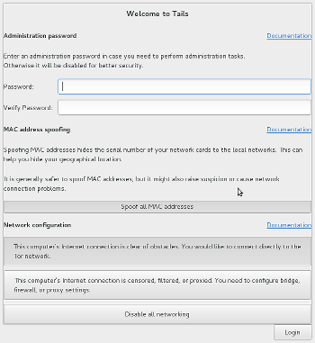
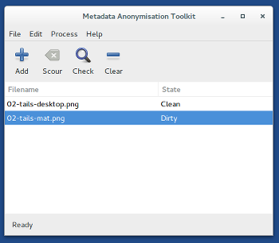
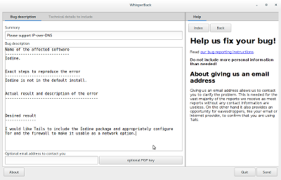

The private, anonymous desktop of Tails 2.0
Version 2.0 of The Amnesic Incognito Live System (Tails) was released on January 26. Tails is a live distribution configured to provide robust anonymity and privacy safeguards for the user. This latest update includes important package updates as well as bringing usability improvements.
Tails 1.0 was released in April 2014, at which point we took a look. 1.0 was based on Debian 6 "squeeze;" the 1.1 update a few months later was re-based from Debian 7 "wheezy." 2.0 updates the base system to Debian 8 "jessie" and brings with it a substantial update to many applications and operating system components. That list includes support for systemd as the init system, GNOME 3.14 (updated from 3.4), LibreOffice 4.3 (updated from 3.5), Git 2.1.4 (updated from 1.7.10), and much more.

The systemd support has also allowed Tails to provide better security; many services are now isolated into namespaces by using systemd-nspawn. The project has also written custom scripts to wipe the contents of memory at shutdown time. For most users, though, the bigger issue may be that there are always security vulnerabilities found and patched between releases. The 2.0 release notes link to the known vulnerabilities in the previous release, a list that includes security holes in OpenSSH, the kernel, bind, and the Mozilla applications.
Users of older Tails releases will also want to note that the project performed a GPG key transition in conjunction with the 1.3.1 release in March 2015. Thus, to verify the signature on the downloadable ISO image, one will need to grab the updated key.
For new users, the project has developed an interactive installation assistant on its web site. The assistant walks the user through a series of questions to help them find the correct download and to help them get it written to the appropriate installation media.
I tested the new release on a laptop and in a virtual machine. Tails is fairly lightweight, so it starts up noticeably quicker than many full-blown desktop distributions. The only real hangup is that, while Tails does support the creation of an encrypted, persistent storage volume on USB media, that option is only available from within the Tails Installer program—it cannot be done on a USB stick that the Tails ISO was copied onto with dd.

The hurdle is not large, but the Tails documentation attempts to explain the situation by telling the user to use two separate USB drives, and some users may find the explanation more perplexing than helpful. Whether or not including a persistent volume is a good idea is up for debate; the project provides a warning page to educate potential users about the issues involved.
Once it is installed onto a bootable medium (e.g., USB or DVD), though, getting started with Tails is easy enough. At the session login screen, Tails offers options (seen to the left) to enable a root password, to start up with a spoofed MAC address, to set various network options (including disabling networking altogether), and to connect to Tor through a bridge node rather than through a standard entry node. All the options are transient, applied only during the current session.
Tor and Tor Browser are, naturally, key features of using Tails. The Tor Browser included is version 5.5, which is based on Firefox 38.6.0 ESR. One of the few known issues with Tails 2.0 is that an oversight caused the release to ship with misconfigured fingerprint resistance. Specifically, the browser is vulnerable to font fingerprinting. However, since all Tails 2.0 systems include the exact same set of installed fonts, the impact of this configuration issue is thought to be limited.

This is first Tails release to include GNOME Shell as the desktop environment, although Shell is run in "Classic" mode (with a menubar at the top of the screen). The release also replaces Claws Mail (which was the email application in previous releases) with Icedove, the Debian rebranding of Thunderbird. There is a standard, if basic, set of desktop and multimedia applications included. In addition, the package set includes a selection of security applications and helper utilities, such as Paperkey (to safely export OpenPGP secret keys for printing) and Keyringer (to encrypt and distribute information with Git).
Some of the other utilities included are familiar to users of many desktop distributions, but Tails takes pains to point out that they have security implications. For example, Tails includes a virtual keyboard, and notes that it can be used to enter passwords and other sensitive information to protect against hardware keyloggers.
There are a few custom applications to be found, including the already mentioned Tails Installer, a dedicated bug-reporting program called WhisperBack, and the Metadata Anonymisation Toolkit (MAT) to anonymize the metadata fields used in many common file formats.
Users will also find several usability improvements in the new release. For instance, a desktop notification pops up to alert the user when the Tor client has successfully established a connection to the Tor network. High-DPI displays are also better supported, and support for DVD drives and printers is improved.

Hardware support is a given on most desktop Linux distributions, but it can be tricky for Tails. For instance, since applications are sandboxed with AppArmor, it is not possible to upload files created in another application to a web site using Tor Browser (at least, not without jumping through some hoops to make accidents far less likely). But isolation has its limits: not being able to access the DVD drive on a computer (as in previous releases) was a fairly serious limitation for the Videos application. Tails 2.0 does an admirable job of striking that balance: users can now watch their DVDs and print documents, but not worry that a malicious web site will read the contents of their hard drive.
Tails is a focused distribution, of course: it protects the user
against prying eyes and adversaries attempting to track their
movements. The level of protection it provides is far above the
standard "online security" expectation—but, at times, that
protection is exactly what is warranted. The 2.0 release provides a
solid update to the secure underpinnings of the 1.x series, and the
refreshed desktop and application packages serve to create a more
comfortable user experience at the same time.
| Index entries for this article | |
|---|---|
| Security | Distributions |
Posted Feb 5, 2016 3:06 UTC (Fri)
by intrigeri (subscriber, #82634)
[Link] (2 responses)
Posted Feb 9, 2016 15:23 UTC (Tue)
by ovitters (guest, #27950)
[Link] (1 responses)
Posted Feb 9, 2016 16:57 UTC (Tue)
by intrigeri (subscriber, #82634)
[Link]
The private, anonymous desktop of Tails 2.0
The private, anonymous desktop of Tails 2.0
The private, anonymous desktop of Tails 2.0